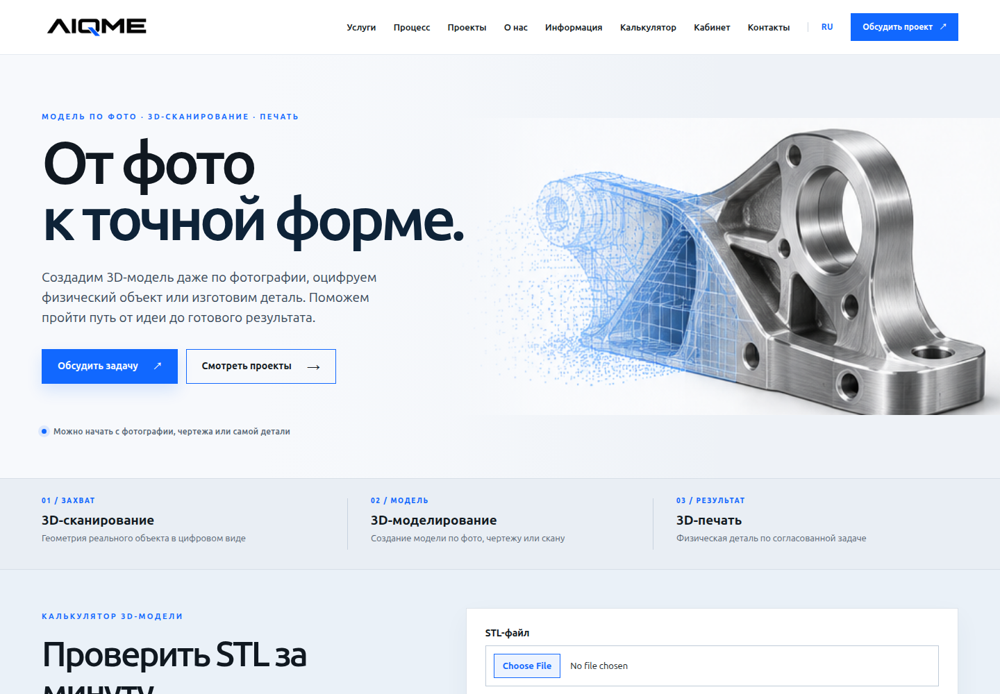
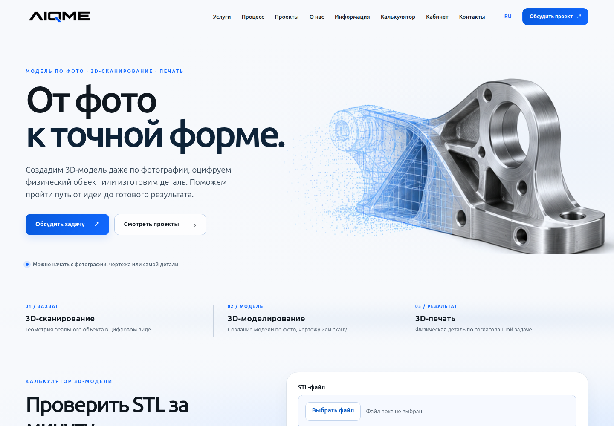
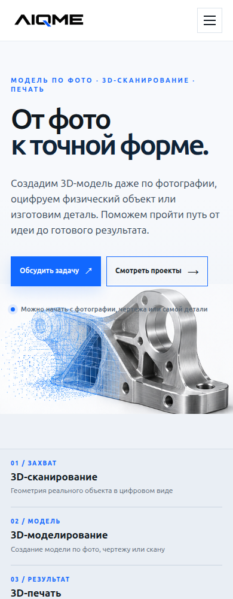
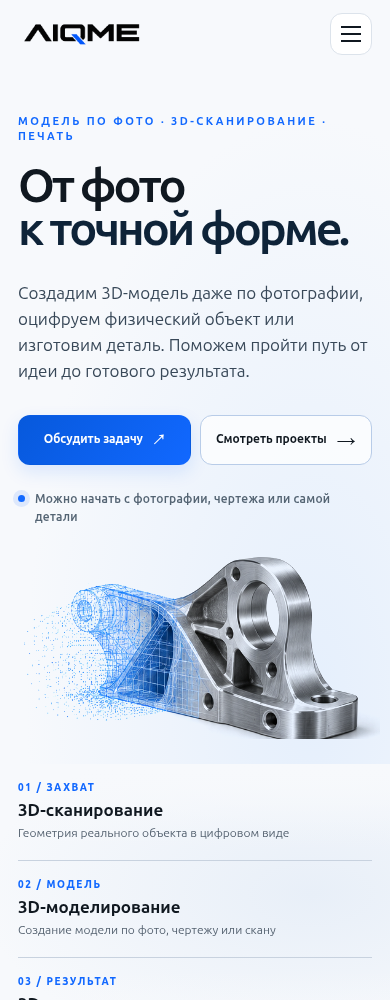

AIQME: обновление интерфейса
Единые кнопки и поля, мягкие поверхности, оформление загрузки файлов и исправленная мобильная композиция. Снимки сделаны при одинаковых размерах окна.
До · 1440 px
После · 1440 px
До · 390 px
После · 390 px
Обновлённый калькулятор на компьютере · На телефоне